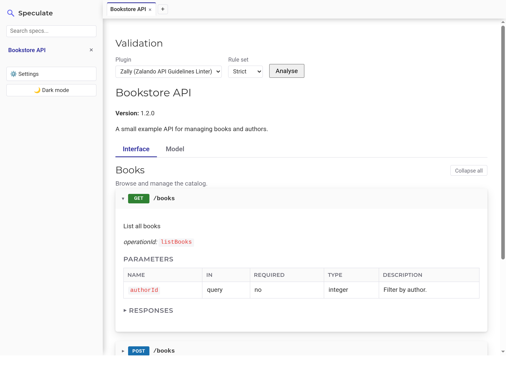

Why Speculate exists
Most OpenAPI viewers want you to run a server, wire up a build step, or upload your spec to someone else's cloud before you can read it. Speculate is the opposite: download one jar, run it, paste a spec into a textbox, and read it — nothing leaves your machine, and there's nothing to configure. It's meant for the everyday case of "I have a spec, I just want to read it comfortably," not as an API management platform.
Features
Paste and go
Paste OpenAPI or Swagger, JSON or YAML, into the textbox. Speculate parses it and saves it locally, keyed by the spec's title, so re-pasting an updated version replaces it instead of piling up duplicates.
Grouped by tag
Endpoints are organized into collapsible sections by OpenAPI tag, each with its own expand/collapse-all control, method-colour badges, and a parameters table.
Worked examples
Request/response bodies render as content-type tabs with a schema tree and a rendered example — the spec's own example when present, otherwise one synthesized from the schema.
Multiple specs, one window
Saved specs live in a searchable sidebar that stays live. Opening one adds a tab, so you can flip between several open specs without losing your place.
Load from disk, and watch it
Point Speculate at a spec's full path, or just drop the file into ~/.speculate/specs. Either way it's loaded immediately and kept in sync — edit the file and Speculate reloads it automatically.
Pluggable custom validation
Every spec runs through validator plugins automatically, with results — severity, rule, finding, location — shown alongside the parser's own messages. Ships with Zalando's Zally API-guidelines linter built in; write your own against a small SPI, or drop a jar into ~/.speculate/plugins.
Light and dark themes
Follows your OS preference by default; the toggle remembers an explicit choice across sessions.
Single runnable jar
No external database, no Docker, no network calls. Data lives in an embedded H2 database under ~/.speculate.
What it looks like
A spec open in Speculate, endpoints grouped by tag.

Get started
Requires Java 17 or later.
- Download the latest
speculate-<version>.zipfrom the releases page and unzip it. - Run the launcher script for your platform:
./speculate.shon Linux/macOS,speculate.baton Windows. - Open
http://localhost:6809and paste a spec — or drop one into~/.speculate/specsand skip pasting entirely.
Need a different port, or a clean slate? ./speculate.sh --port 8080 or ./speculate.sh --wipe-db. See the README for building from source and the full flag list.
Custom validation
Define your own rules — naming conventions, required fields, security
scheme enforcement, and similar house-style checks — that run against
every spec you load and surface as warnings alongside the parser's own
messages. Plugins are discovered from two folders: the bundled
plugins/ next to speculate.jar (which ships
with Zally, Zalando's
API guidelines linter, as the default) and
~/.speculate/plugins for your own — an organization-specific
ruleset, for instance — toggleable per-plugin from Settings without a
restart. See the
README
for how to write one.